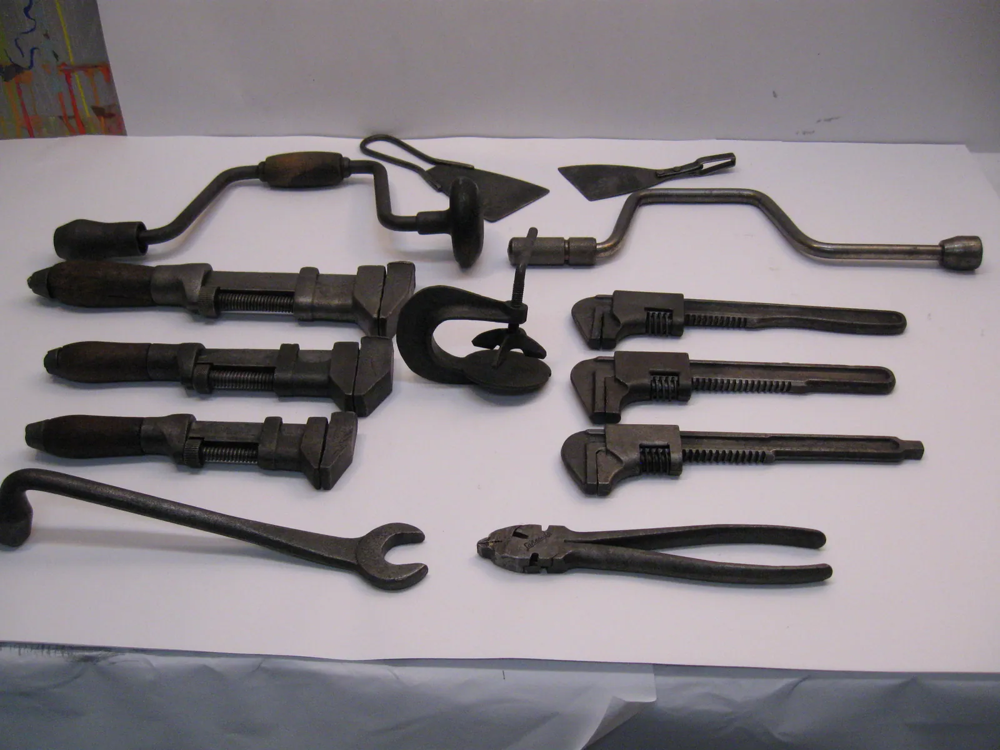

Parts & Tools
Equip your garage wisely. Here are the essential hand tools, the manuals worth owning, the safety gear that matters, and how to organize a shop that is safe, efficient, and a pleasure to work in.

Essential hand tools
You can accomplish a great deal with a modest, well-chosen set of hand tools. Quality matters more than quantity: good tools last a lifetime, fit fasteners properly, and are far less likely to slip and cause injury or damage.
What you'll need
- A socket set in the sizes your car uses (many classics use different standards, so check)
- Combination wrenches (spanners) to match
- Screwdrivers, flat and cross-head, in several sizes
- Pliers, including needle-nose and locking types
- A torque wrench — essential for tightening fasteners correctly
- A quality jack and, crucially, a pair of jack stands
- A multimeter for electrical work, and a good work light
Tip: Note whether your classic uses imperial (SAE) or metric fasteners — or, on some older cars, an older British standard. Using the wrong tool rounds off bolt heads and causes endless grief, so match your tools to your car.
Why a torque wrench matters
Of all the tools, the torque wrench deserves special mention, because it does something no amount of experience can replace: it tightens each fastener to the exact specification the engineers intended. Too loose and a part can work free; too tight and you can strip threads, warp parts, or snap a bolt. Head bolts, wheel nuts, and many other fasteners have specific torque figures in the factory manual, and a torque wrench lets you hit them precisely. It is not an expensive tool, and it is one of the most important in the box.
The manuals worth owning
For any classic, the single most valuable reference is the correct factory service manual for your exact make, model, and year. It contains the specifications, procedures, and torque figures that general guides like this one cannot — the precise numbers your car was built to. Original or reprinted factory manuals, and reputable aftermarket repair manuals, are widely available for popular classics and are worth every penny.
Alongside the manual, a parts catalog for your car helps enormously when ordering, and the knowledge in club publications and enthusiast forums fills in the rest. Build yourself a small reference library before you build the car; you will consult it constantly.
Safety gear
Protective equipment is cheap, and the harm it prevents is not. Make reaching for it as automatic as reaching for a wrench.
- Eye protection for anything that can throw a chip, spark, or splash — which is most jobs.
- Gloves suited to the task: mechanic's gloves for general work, chemical-resistant for solvents and fuel.
- A respirator or good ventilation for paint, solvents, and dust; many shop chemicals are not to be breathed.
- A fire extinguisher rated for fuel and electrical fires, kept within easy reach whenever you work.
- Sturdy footwear to protect against dropped tools and parts.
Organizing the shop
A tidy shop is a safe, efficient, and pleasant shop. Keep tools in a logical place — a pegboard or a rolling chest — so you spend your time working, not hunting. Store fasteners and small parts in labeled containers. Keep the floor clear of trip hazards and spills, and clean up oil promptly, as a greasy floor is a genuine danger. Good lighting prevents both mistakes and injuries, and a comfortable working height — a bench or a stool and creeper — saves your back over the long hours a project takes.
Safety first: Store fuel, oil, solvents, and rags soaked in them properly and away from any source of ignition. Oily rags can even spontaneously combust if left in a pile; store them in a sealed metal container. A tidy, well-ventilated shop is a safe one.
Specialty tools worth knowing
Beyond the basics, certain jobs call for special tools, and knowing they exist saves much frustration. A feeler gauge sets the fine gaps on points and valves. A dwell meter or timing light tunes an older ignition precisely. A compression tester reveals an engine's internal health. A brake bleeder kit makes a two-person job manageable, and a ball-joint or pulley puller frees stubborn parts that would otherwise defeat you.
You need not own all of these at once. Buy or borrow a specialty tool when a job requires it, and you will gradually build a collection suited to your particular car. Many are inexpensive, and the right tool turns a maddening job into a straightforward one while sparing the parts a makeshift approach would damage. A specialty tool bought for one job often proves its worth many times over down the years, and lends easily to a fellow enthusiast in need.
Where to find parts and tools
The classic-car world is wonderfully well supplied. For tools, a reputable hardware or automotive store serves most needs, and quality secondhand tools from sales and family are often excellent value. For parts, the sources are many: specialist suppliers for your make, reproduction-parts companies for popular models, club spares schemes, swap meets, salvage yards, and online enthusiast marketplaces.
The golden rule is to research before you buy, especially for a less common car — knowing that parts are available and affordable should shape your choice of project in the first place, and can save you from a beautiful car that becomes a frustrating dead end for want of a simple component. Buy from reputable sources, keep your receipts, and cultivate the specialists for your make; their expertise is as valuable as their inventory. A good relationship with a knowledgeable supplier is worth its weight in chrome, and often opens doors to rare parts and sound advice that no catalog lists.
A sensible first-project toolkit
If you are just starting out, resist the urge to buy everything. A sound first kit for basic maintenance need be no more than a socket and wrench set in your car's sizes, a set of screwdrivers and pliers, a torque wrench, a jack with proper jack stands, an oil-drain pan, a work light, and your safety gear. With that modest collection and the correct manual for your car, you can handle oil changes, fluid checks, and much routine upkeep.
Add to the kit as your confidence and your projects grow, buying quality each time. A well-chosen tool bought once and cared for will outlast many cheap replacements, and there is deep satisfaction in a toolbox assembled thoughtfully over the years, each tool earned by a job well done.
A word on authenticity in parts
When buying parts for a classic, you will often face a choice between genuine original parts, high-quality reproductions, and cheaper generic substitutes. Each has its place. For a faithful restoration or a judged show car, original or correct reproduction parts matter and preserve the car's authenticity and value. For a driver you simply want to keep on the road reliably, a sound reproduction or quality modern equivalent is often perfectly sensible and easier on the wallet.
What to avoid is the cheapest generic part where safety or fit is concerned. A bargain brake or steering component that does not fit or perform properly is no bargain at all. Match the part to the purpose: authenticity where it counts, reliability always, and never a false economy on anything that keeps you safe. A knowledgeable supplier for your make can guide you to the right choice, which is one more reason to cultivate those relationships.
Lighting and comfort in the shop
A comfortable shop is a shop you will actually use, and comfort matters more as the years go by. Invest first in good lighting — our eyes need more of it with age, and bright, even light prevents both mistakes and injuries. A combination of overhead light and a movable work lamp lets you see into the dim corners of an engine bay or under a dashboard.
Think, too, about your body. A rolling stool spares your legs; a padded creeper is far kinder than bare concrete when you must get low; and keeping tools and parts within easy reach saves endless stooping and stretching. Warmth in winter and ventilation in summer make long sessions bearable. None of this is luxury; it is simply the difference between a shop that welcomes you and one that wears you out. Set yours up kindly, and you will enjoy your projects far more and for far longer.
Building your kit over time
You need not buy everything at once. Build your kit as your projects demand, buying quality as you go. Start with the basics, add specialized tools when a particular job calls for them, and consider renting or borrowing tools you will use only once. Many classic-car clubs maintain a library of specialized tools for members to borrow, and public tool libraries are increasingly common. A thoughtfully assembled kit, acquired over time and well cared for, will serve you and perhaps your heirs for decades. There is a real pleasure, too, in a toolbox built this way — each tool carrying the memory of the job that earned its place, and many a family has a cherished old tool chest handed down through the generations. With your shop equipped, the Maintenance section awaits.